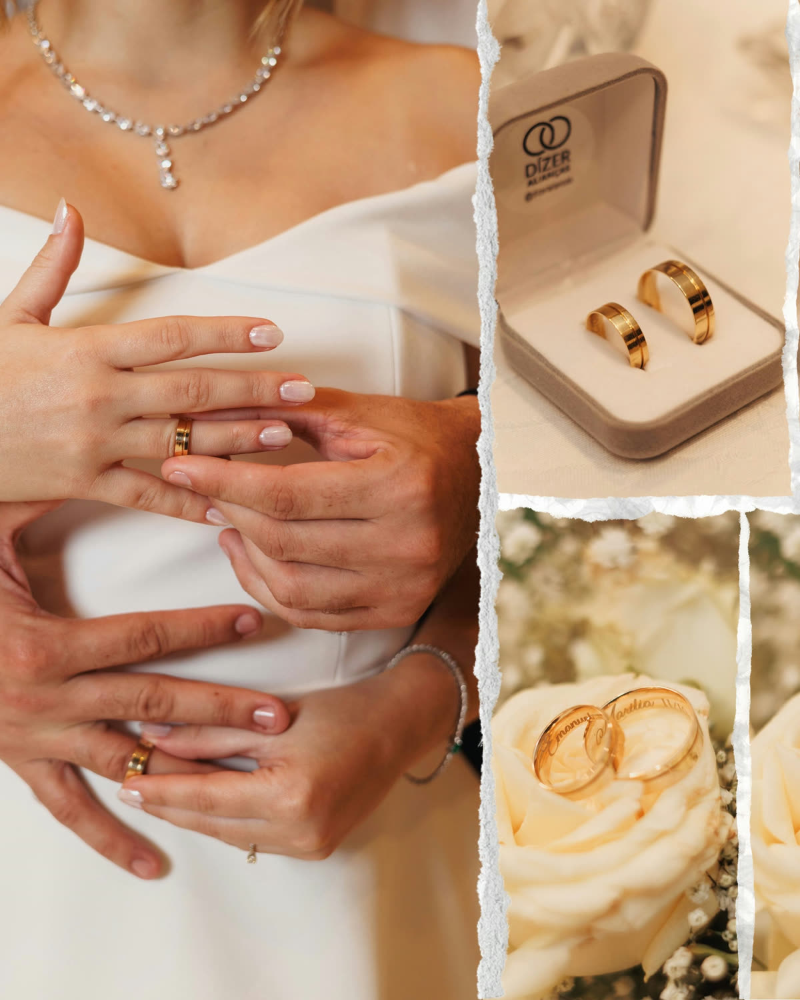
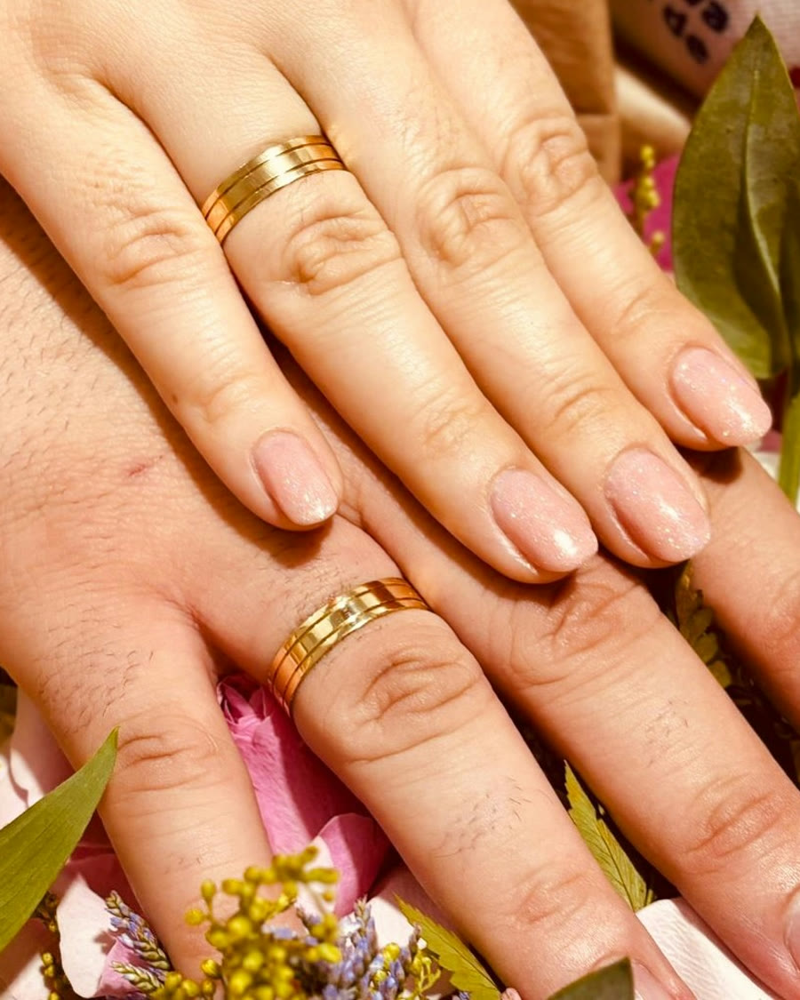

Escolha o modelo
Anatômica, reta, com ou sem brilhantes — você vê e sente as peças na oficina.

Fabricação própria · João Pessoa · desde 2005
Há 20 anos gravamos, na mão, a frase que dois nomes escolhem para durar uma vida. Ouro 18K, direto de fábrica, em João Pessoa.
atendimento por hora marcada, direto na fábrica em João Pessoa
03 — a história
A oficina abre as portas em João Pessoa, com um único objetivo: fabricar alianças de verdade, sem intermediário.
A gravação manual vira a assinatura da casa — cada peça passa pelas mãos de um gravador antes de sair da fábrica.
Mais de 5 mil casais já levaram uma Dízer para o dedo, sempre em ouro 18K e preço de fábrica.
Atendimento por hora marcada, para cada casal ter tempo e atenção na hora de escolher o que a aliança vai dizer.
04 — casais reais


05 — como funciona
Anatômica, reta, com ou sem brilhantes — você vê e sente as peças na oficina.
O nome, a data, o apelido — o que for gravado por dentro é o que vai durar por fora.
Sem fila, sem pressa. Você agenda, vem à fábrica em João Pessoa e sai com a data certa de entrega.
06 — vamos gravar a sua
Fale agora pelo WhatsApp e leve a frase de vocês para dentro do ouro. Atendimento por hora marcada, na fábrica, em João Pessoa (PB).
Gravar a minha aliança